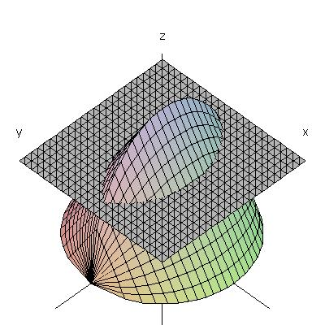

Here is the solid discussed in class on Tuesday.
The base of the solid is the unit circle
x2+y2=1, and the cross-section at
x is an equilateral triangle (as shown in the figure below).
As one student suggested in class, the cross-sections
parallel to the base (that is, parallel to the xy-plane)
look sort of like "footballs".

The following figure shows the "bundt cake" discussed in class on Wednesday.
This is the solid obtained by rotating about the y-axis
the area under the graph of y=sin x, between x=0 and x=π.
This figure shows a cross-section perpendicular to the x-axis;
you can see that the plane meets the solid in a sine curve.
This figure shows a cross-section parallel to the xy-plane.
I've drawn the plane in red this time to make the cross-section more easily visible;
you can see that it is an annulus.
These pictures were produced using the software package Maple.